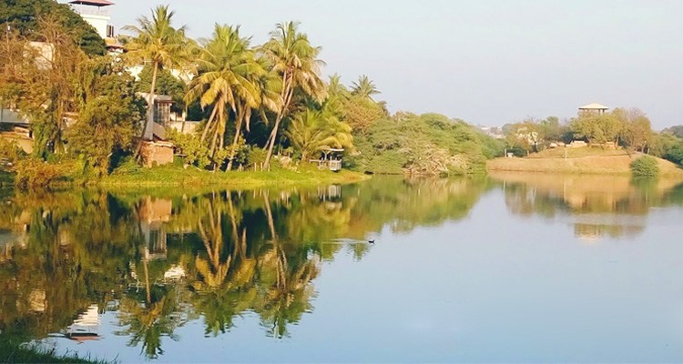
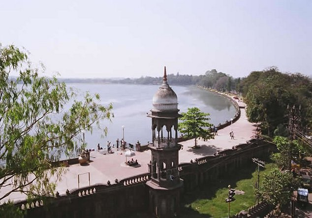
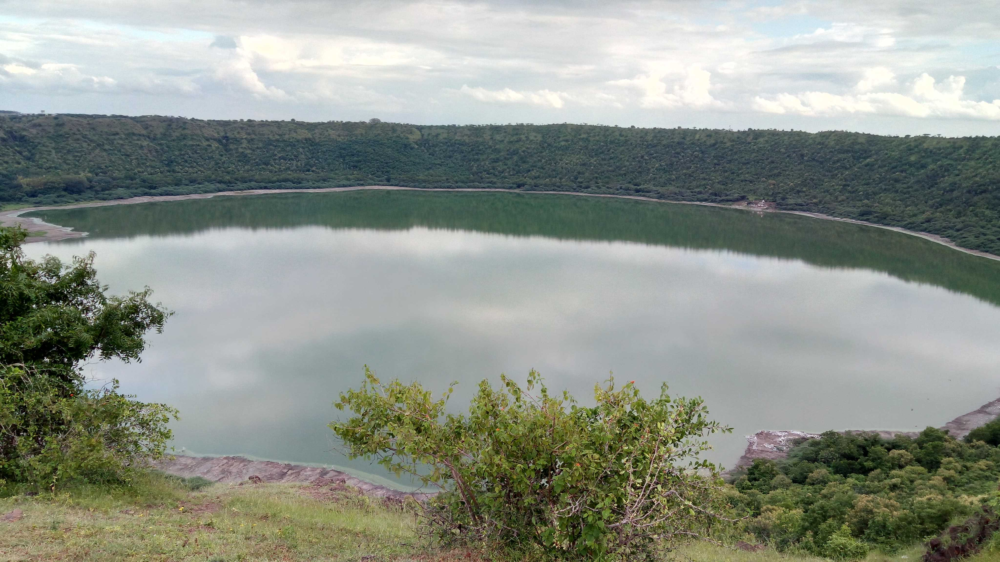

Salim Ali Lake
Salim Ali Lake,
Located in the heart of Aurangabad, standing opposite the Himayat Bagh near Delhi Gate, is the
pristine Salim Ali Lake. Also known as the Salim Ali Sarovar, this lake is a beautiful bird-watching
spot, nesting a wide variety and number of migratory birds. There is also a well-stocked bird
sanctuary at the lake which is a humble abode to a number of local and foreign exotic species of
birds. Salim Ali Lake is an ideal place to be visited with family and friends. It is a must-visit
for photographers, nature lovers and bird watchers.

Rankala Lake
The Rankala Lake is a very famous tourist attraction for people from all
over the world. Marked by the natural beauty and peaceful environment it provides, it sure does
become one of the must-visits on everyone's list. The lake was constructed by Shri Chhatrapati Shahu
Maharaj, the then king of Kolhapur. Rajgath and Marathghat are the two ghats that the lake has. The
lake covers an area of as large as 107 hectares. The lake is generally visited during the evening
time.

Ambazari Lake
Located on the southwest border of Nagpur in Maharashtra in India, the Ambazari Lake is one of the
eleven lakes and largest one that the city of Nagpur houses. Boating facilities in rowboats, as well
as self-driven paddleboats, are also available to the visitors, which add to the fun and excitement
of visiting the lake and help them to explore the surrounding scenic beauty.

Lonar Lake
LLonar Lake, also known as Lonar crater, is a notified National Geo-heritage Monument, saline, soda lake, located at Lonar in Buldhana district, Maharashtra, India. Lonar Lake is an astrobleme created by a meteorite impact during the Pleistocene Epoch. It is one of only four known hyper-velocity impact craters in basaltic rock anywhere on Earth. The other three basaltic impact structures are in southern Brazil. Lonar Lake has a mean diameter of 1.2 kilometres (3,900 ft) and is about 137 metres (449 ft) below the crater rim. The meteor crater rim is about 1.8 kilometres (5,900 ft) in diameter.

Vetal Tekdi
Vetal Tekdi is one of Pune's most well-known landmarks. It envelops the entire city and is a
stunning place to spend an evening or an early morning. It is known by various names such as Hanuman
Tekdi, MIT Tekdi, and Pashan Tekdi.